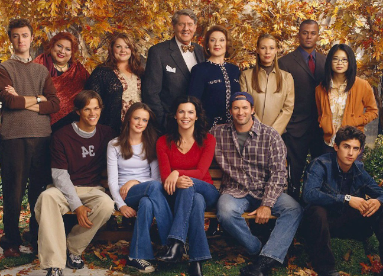
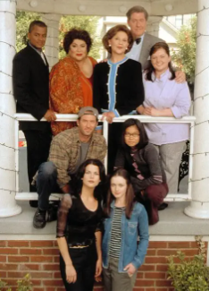

Gilmore Girls is a show that revolves around the life of a single mom and her daughter. Their names are Lorelai Gilmore and Lorelai Leigh Gilmore. Since both of them have the same name, the daughter uses the nickname "Rory". They live in a small town called "Stars Hollow" and it is located in Conneticut. The first episode of the show was released on October 5, 2000. The show was created by Amy Sherman-Palladino. There are a total of 7 seasons, plus a revival/mini series that takes place nearly a decade after the finale of the original series.

The reason why I like Gilmore Girls is because it shows how treating your mom/daughter as a friend can be good but sometimes bad. Throughout the show, Rory and Lorelai have many conflicts because of things like relationships, education, and family members. At the beginning, the episodes were a little boring, but once you get deeper into the first season it get's really good. The show is available on netflix. Another thing that I like is seeing how the main character, Rory, changes throughout the seasons. Her character development was pretty good, but some of the decisions that she makes are a little questionable and it makes me want to push her down a flight of stairs. Another thing I enjoy is how fast the characters talk and how many refernces they make. They have thousands of references that come from a variety of books, movies, other tv shows, music, and celebrities. Although I don't understand most of the references, they are interesting to hear.
I recommend this show for people who are into 2000's drama and comedy. The 2000's created many good shows and movies, like Gossip Girls, One Tree Hill, and The O.C. In my opinion, Gilmore Girls has the perfect balance of drama, comedy, and romance.
